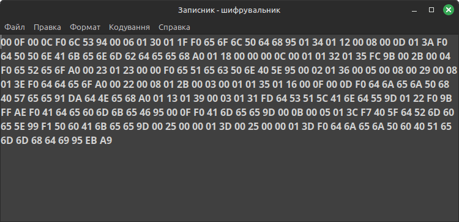

Команди меню
"Кодування"
- Шифрувати
- шифрує текст в редакторі. Шифрування відбувається за внутрішнім
алгоритмом і залежить від вказаного ключа. Навіть при наявності
програми текст неможливо буде розшифрувати, не маючи ключа.
- Розшифрувати
- розшифровує текст в редакторі. Якщо зашифрований текст
зберігається у файлі, його попередньо потрібно завантажити в редактор.
Для розшифровування потрібно знати пароль - ключове слово або фразу.
Розшифрований текст можна просто прочитати, не зберігаючи, або зберегти
у новий файл (Файл -> Зберегти як...), або перезаписати вже
існуючий (Файл -> Зберегти).
